Connaître ses données avant d'entraîner
Le cours insiste : « Foncer, c'est échouer ». Avant d'entraîner le moindre modèle, on a étudié le dataset dans le notebook notebooks/01_eda.ipynb, en suivant la méthode du cours en quatre temps : l'inspection initiale, la qualité des données, l'analyse univariée (une variable à la fois), puis l'analyse bivariée et multivariée (les liens entre variables). On a terminé en regardant les images elles-mêmes. Chaque constat devait déboucher sur une décision pour la suite.
1.1 · Inspection initiale : que contiennent les données ?
Les images viennent de Google Earth : ce sont des bases aériennes militaires, issues du dataset public MAR20. Les avions ont été encadrés et étiquetés à la main par des annotateurs, qui ont donc pu se tromper : d'où la vérification de la qualité ensuite. Les vrais noms des avions ne sont pas donnés, seulement les codes A1 à A20.
Chaque image 1005.jpg a son fichier 1005.xml au format Pascal VOC, avec une balise <object> par avion :
<size> <width>800</width> <height>800</height> </size>
<object>
<name>A2</name> ← le type d'avion
<truncated>0</truncated> ← 1 s'il est coupé par le bord
<bndbox> ← la boîte, en pixels
<xmin>275</xmin> <ymin>22</ymin>
<xmax>385</xmax> <ymax>149</ymax>
</bndbox>
</object>
L'origine des coordonnées est en haut à gauche, et l'axe y descend. On a chargé les 1 331 fichiers dans un tableau pandas d'une ligne par avion : 7 870 lignes, 16 colonnes.
Ce tableau contient nos deux cibles :
- les 4 nombres de la boîte, pour la détection (une régression) ;
- le type, pour la classification.
Avec environ 425 Mo d'images, ce n'est pas du Big Data : tout tient dans un PC portable.
1.2 · Qualité : les données sont-elles fiables ?
| Contrôle | Résultat |
|---|---|
| Valeurs manquantes, images sans annotation (et l'inverse) | 0 |
| Boîtes vides, à l'envers, hors de l'image, en double, ou de classe inconnue | 0 |
| Images dont la taille réelle diffère de celle du XML | 0 |
| Doublons exacts (même empreinte MD5) | 0 |
| Avions tronqués, qui touchent tous bien un bord | 331 (4,2 %) |
| Avions marqués « difficiles » | 0 |
Les données sont propres : aucun nettoyage n'est nécessaire. Restait un piège plus subtil : les quasi-doublons, deux photos presque identiques d'une même scène.
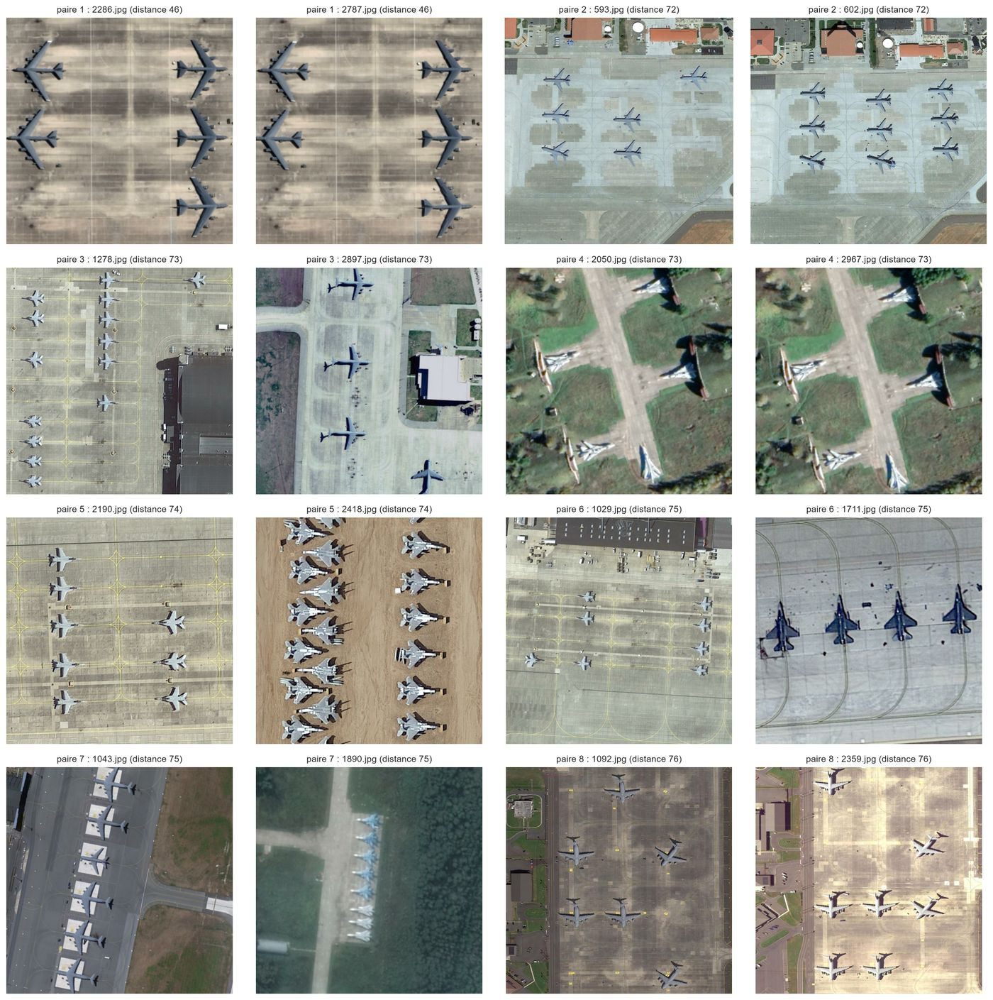
Ce qu'on regarde
Pour chaque image, une empreinte visuelle (dHash) de 256 bits, qui résume ses contours. On compte les bits différents entre deux empreintes : c'est la distance de Hamming. Entre deux images au hasard, elle vaut 127 en médiane.
Ce qu'on voit
La paire 1 (2286 / 2787, distance 46) et la paire 4 (2050 / 2967) sont la même scène. La paire 2 (593 / 602) et la paire 8 (1092 / 2359, décalée d'environ 250 px) sont la même base à une autre date. Les paires 3, 5, 6 et 7 sont des scènes différentes : le chiffre trouve des candidats, mais c'est l'œil humain qui tranche.
Ce que ça change
Si l'une de ces images était dans l'entraînement et l'autre dans le test, le modèle serait évalué sur une image presque déjà vue : une fuite de données. Au découpage, toutes les images à 80 bits ou moins l'une de l'autre sont regroupées (15 groupes d'au plus 3 images), et un groupe reste toujours dans un seul jeu.
1.3 · Analyse univariée : une variable à la fois
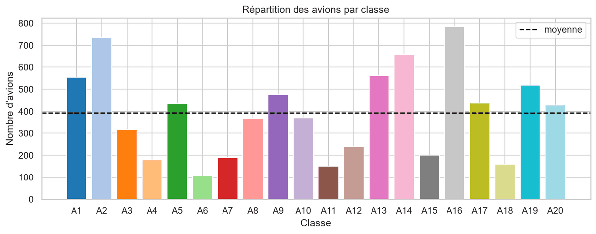
Ce qu'on regarde
La cible de la classification : combien d'avions de chaque type ? Avec 20 catégories, un camembert serait illisible, d'où les barres.
Ce qu'on voit
Un fort déséquilibre : 785 avions pour A16, mais seulement 107 pour A6, soit 7,3 fois moins.
Ce que ça change
Un modèle qui raterait tous les A6 ne perdrait que 1,4 % d'accuracy. On mesure donc avec la macro-F1, on donne plus de poids aux classes rares, et on découpe de façon stratifiée.
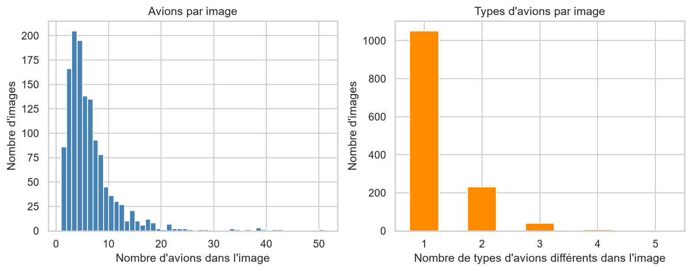
Ce qu'on regarde
Combien d'avions, et combien de types différents, dans chaque image.
Ce qu'on voit
5 avions par image en médiane (5,9 en moyenne), et jusqu'à 50. Surtout, 79 % des images (1 052) ne contiennent qu'un seul type d'avion.
Ce que ça change
Les avions d'une même image se ressemblent beaucoup : on découpe par image, jamais par avion. Le chiffre de 79 % suggère aussi une piste : faire « voter » les avions d'une même image.
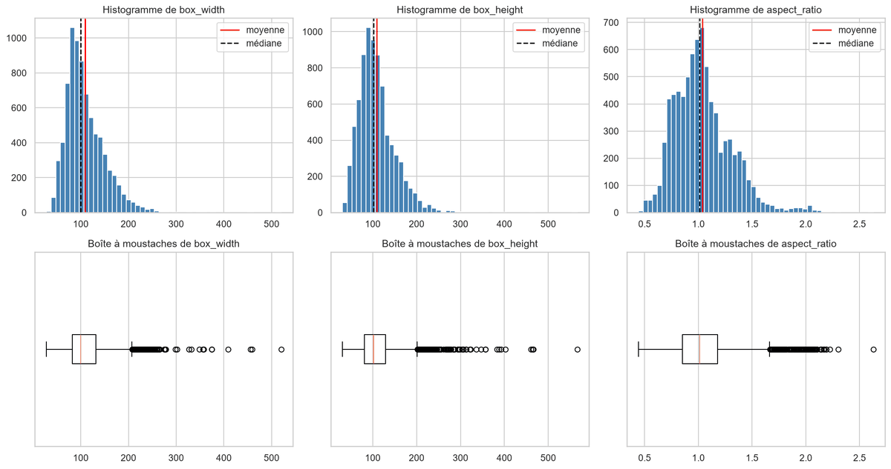
Ce qu'on regarde
La taille des avions, en pixels. Une boîte à moustaches se lit ainsi : la boîte va du 1er quartile (Q1) au 3e quartile (Q3), elle contient la moitié centrale des valeurs, et le trait est la médiane. Chaque moustache s'arrête à la valeur la plus extrême située à moins de 1,5 × (Q3 − Q1) de la boîte. Les points au-delà sont des valeurs atypiques selon cette règle, ce qui ne veut pas dire fausses.
Ce qu'on voit
- Des boîtes d'environ 100 × 102 px en médiane, presque carrées.
- Le plus grand côté mesure 111 px en médiane, 38 px pour le plus petit avion.
- La moyenne dépasse la médiane : quelques très gros avions tirent la distribution vers le haut. Ces points atypiques sont de vrais gros avions, pas des erreurs.
Ce que ça change
YOLO réduit les images à 640 px par défaut : les plus petits avions passeraient de 38 à 30 px. On garde donc la résolution native de 800 px pour le détecteur. (90 % des images sont carrées, dont 1 174 en 800 × 800.)
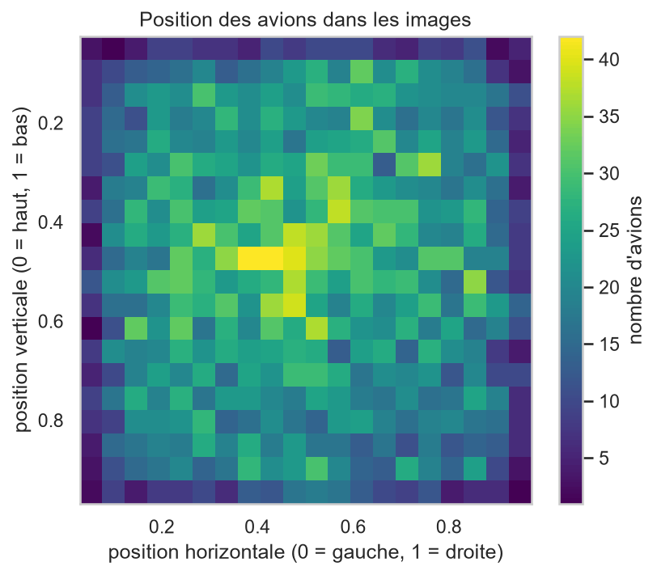
Ce qu'on voit : il y a des avions partout dans l'image, un peu plus au centre et nettement moins tout au bord. 15 % des avions ont leur centre à moins de 10 % du bord (80 px sur une image de 800), alors que cette bande couvre 36 % de la surface. C'est en partie mécanique : le centre d'un avion d'environ 110 px ne peut pas toucher le bord sans que l'avion soit coupé.
Ce que ça change : aucune zone n'est privilégiée, donc le modèle doit chercher dans toute l'image. Les avions proches du bord ont parfois une vignette qui dépasse de l'image : on la complète par une bordure grise.
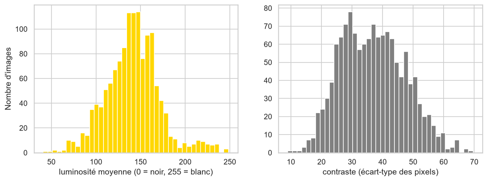
Ce qu'on regarde
Les conditions d'éclairage : toutes les photos sont-elles prises de la même façon ?
Ce qu'on voit
Non : la luminosité moyenne va de 41 à 248, avec la plupart des images entre 100 et 170. Le contraste varie aussi beaucoup.
Ce que ça change
On fait varier la luminosité et le contraste pendant l'entraînement (data augmentation). C'est peut-être aussi ce qui explique l'image 3254 du test : avec une luminosité moyenne de 200, elle est plus claire que toutes les images d'A16 de l'entraînement (171 au plus), et le classifieur y hésite. 7 de ses 9 avions passent sous le seuil de confiance. C'est une hypothèse, pas une preuve.
1.4 · Analyse bivariée et multivariée : les liens entre variables
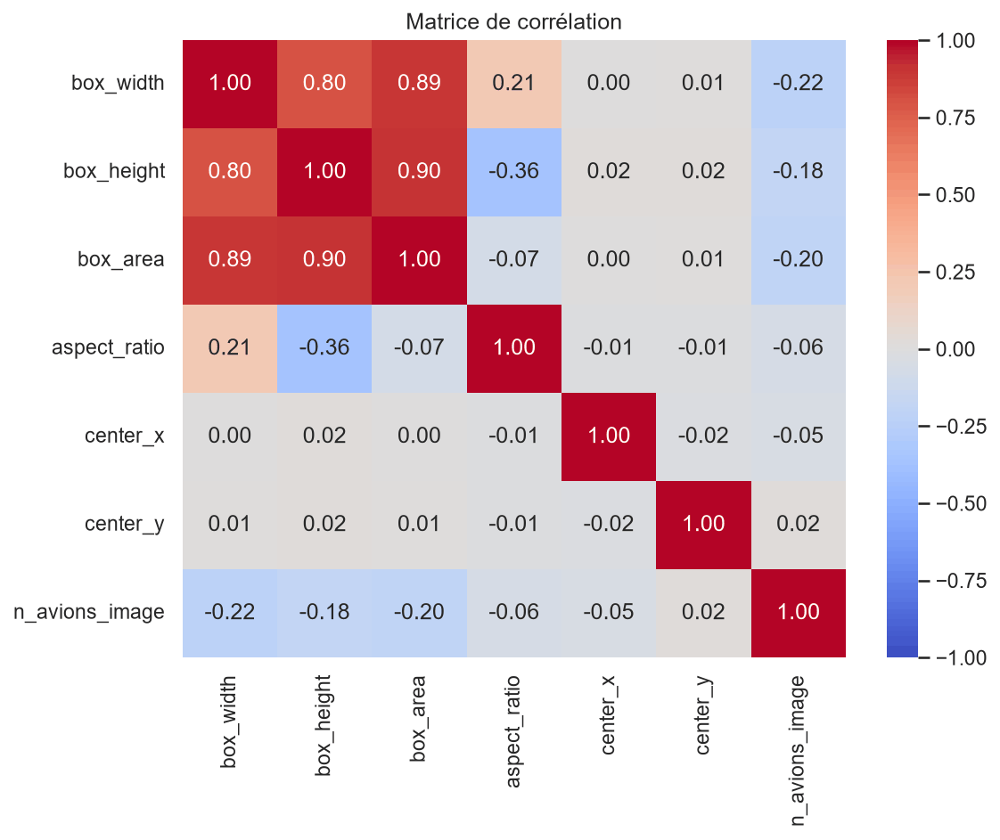
Comment la lire. Chaque case donne le coefficient de corrélation de Pearson entre deux variables, de −1 à +1 :
- +1 : elles augmentent ensemble, en ligne droite ;
- 0 : aucun lien linéaire ;
- −1 : quand l'une augmente, l'autre diminue, exactement en ligne droite.
Entre les deux, le signe donne le sens du lien et la valeur absolue sa force : 0,8 est un lien fort, 0,2 un lien faible. La diagonale vaut toujours 1 (une variable avec elle-même), et la matrice est symétrique.
Ce qu'on voit.
- Largeur et hauteur : 0,80. Les deux suivent la taille de l'avion, c'est logique.
- L'aire est très liée aux deux (0,89 et 0,90), puisqu'elle vaut largeur × hauteur.
- La position (center_x, center_y) n'a aucun lien linéaire avec la taille (coefficients entre −0,05 et 0,02) : la place d'un avion dans l'image ne dit rien de sa taille.
- Le nombre d'avions de l'image et l'aire des boîtes : −0,20 (−0,22 pour la largeur, −0,18 pour la hauteur). C'est un lien faible : les images très chargées contiennent un peu plus souvent de petits avions, comme des chasseurs alignés, avec beaucoup d'exceptions.
À retenir : une corrélation n'est pas une causalité.
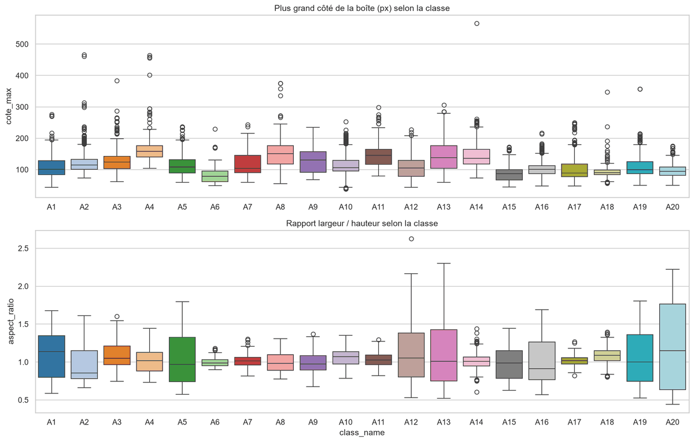
Ce qu'on regarde
Le lien entre une variable et la cible, que le cours appelle « la partie la plus importante » : la taille dépend-elle du type ?
Ce qu'on voit
Oui, beaucoup : le plus grand côté médian va de 78 px pour A6 à 158 px pour A4. La taille est un bon indice du type.
Ce que ça change
Toutes les vignettes sont redimensionnées à la même taille avant d'entrer dans le réseau : il voit un petit et un gros avion à la même échelle, et cet indice est perdu. Piste : donner aussi la taille de la boîte au classifieur (la forêt aléatoire, elle, la reçoit).
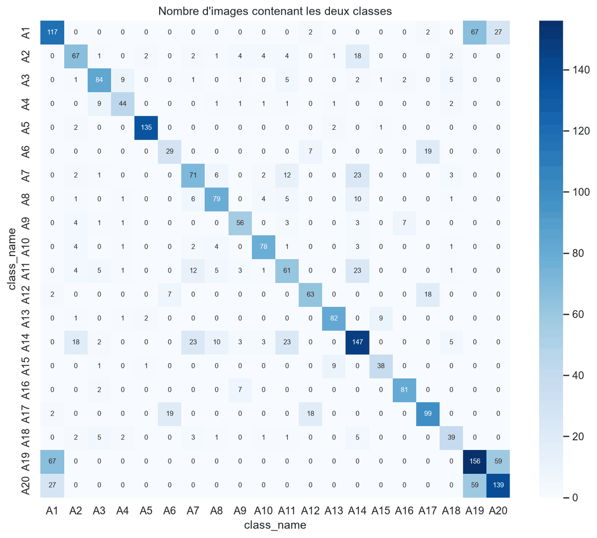
Comment la lire. Sur la diagonale, le nombre d'images qui contiennent ce type (par exemple 81 images pour A16). Hors de la diagonale, le nombre d'images qui contiennent les deux types.
Ce qu'on voit.
- La plupart des cases sont à 0 : les types se mélangent peu.
- Un trio se détache : A1 et A19 partagent 67 images, A19 et A20 en partagent 59, A1 et A20 27. Ces trois chasseurs stationnent sur les mêmes bases.
- D'autres groupes : A6 avec A17 (19 images), A12 avec A17 (18), A14 avec A7 et A11 (23 chacun).
Ce que ça change. A1, A19 et A20 se ressemblent et apparaissent ensemble, sur les mêmes fonds : c'est là qu'on attendait des confusions, et on en a bien trouvé entre A1 et A19. A13, lui, ne côtoie jamais ces trois-là : on le trouve surtout avec A15 (9 images). Le découpage stratifié devait garder chacun de ces types en entraînement, en validation et en test.
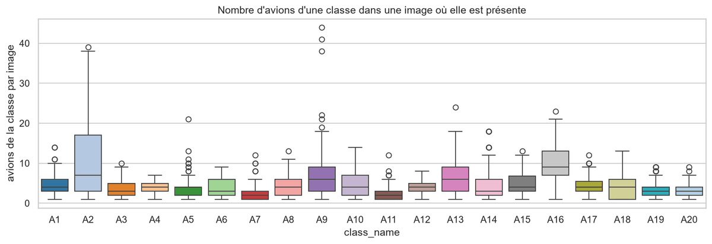
Ce qu'on regarde
Les avions d'un même type sont-ils dispersés dans beaucoup d'images, ou concentrés sur quelques-unes ?
Ce qu'on voit
Certains types sont très concentrés. En moyenne, A2 compte environ 11 avions par image où il est présent (médiane 7, jusqu'à 39), A16 9,7 (médiane 9) et A9 8,5 (médiane 6, jusqu'à 44). Sur la figure, le trait de chaque boîte est la médiane : la moyenne la dépasse, tirée vers le haut par quelques images très chargées.
Ce que ça change
Comme on découpe par image, une seule image peut emporter 40 avions d'un type dans un jeu. Un tirage au hasard pourrait déséquilibrer les jeux : d'où le découpage stratifié, avec 50 tirages essayés.
1.5 · Voir les données : les chiffres ne suffisent pas
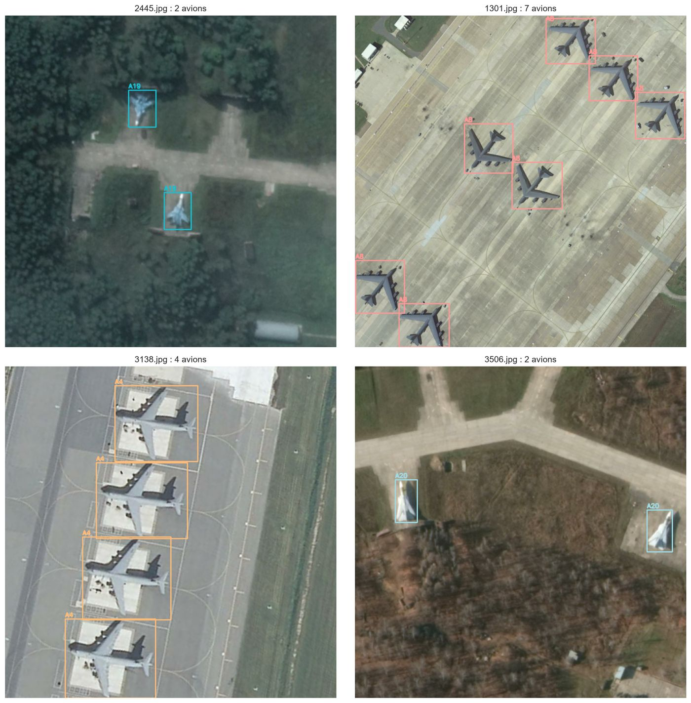
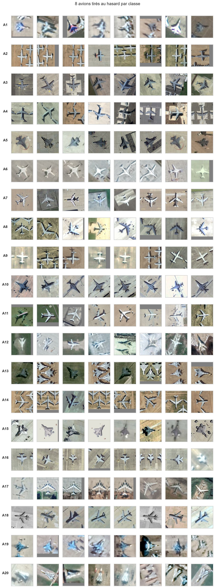
Ce qu'on voit
- Les grandes familles se distinguent bien : transporteurs, ravitailleurs, bombardiers, chasseurs.
- Certains chasseurs se ressemblent beaucoup : A1, A13, A19 et A20.
Et encore
- Aucune orientation privilégiée : les avions pointent dans toutes les directions.
- Le décor varie beaucoup (béton, sable, herbe, forêt), et certaines images sont floues.
Ce que ça change
- Des rotations et retournements pendant l'entraînement.
- Des confusions entre chasseurs : A1 pris pour A19, comme prévu ; et A13 pris pour A15, que l'EDA n'avait pas anticipée, alors que c'est l'erreur la plus fréquente du test (5 des 9 mauvais types).
1.6 · Ce que l'analyse a changé pour la suite
| Ce qu'on a constaté | Ce que ça a changé |
|---|---|
| 20 types très déséquilibrés : 107 avions pour A6, 785 pour A16 (7,3 fois plus) | la macro-F1 comme mesure, plus de poids aux classes rares, un découpage stratifié |
| Des avions d'environ 100 × 100 pixels (plus grand côté : 111 px en médiane, 38 px pour le plus petit) | le détecteur garde la résolution native de 800 px au lieu de 640 |
| Aucune orientation privilégiée : vu du ciel, un avion pointe dans toutes les directions | des retournements pour les deux étages, et des rotations à n'importe quel angle pour le classifieur seulement (une rotation agrandirait les boîtes du détecteur) |
| Une luminosité très variable : la moyenne de gris d'une image va de 41 à 248 (sur une échelle de 0 = noir à 255 = blanc) | des variations de luminosité et de contraste pendant l'entraînement |
| La taille dépend du type (78 à 158 px en médiane) | une information perdue par le redimensionnement des vignettes : piste d'amélioration |
| 4 paires de quasi-doublons parmi les 8 plus proches (la même scène, ou la même base à une autre date) | toutes les images à 80 bits ou moins sont regroupées (15 groupes), et un groupe reste dans un seul jeu au découpage |
| 79 % des images n'ont qu'un type, et certains types sont concentrés sur peu d'images | un découpage par image et stratifié, jamais par avion |
| Certains chasseurs se ressemblent (A1, A13, A19, A20) ; A1, A19 et A20 partagent en plus les mêmes bases | une confusion attendue, qu'on a bien retrouvée : A1 pris pour A19. L'EDA n'avait pas prévu A13 pris pour A15, pourtant l'erreur la plus fréquente du test |
| Des données propres : aucune annotation manquante ni incohérente | aucun nettoyage nécessaire |